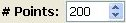
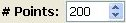

will clear the window and it will redraw everything evaluated
up to now, so it may avoid any problem with the screen which may have appeared. It is useful once you have
got all separatrices to bring up the singular points which may have been shadowed by the lines,
or after you have deleted orbits.
will clear the window and it will redraw everything evaluated
up to now, so it may avoid any problem with the screen which may have appeared. It is useful once you have
got all separatrices to bring up the singular points which may have been shadowed by the lines,
or after you have deleted orbits.
 will link you with
the Plot Separatrices window. You may also access to this window
by simply selecting one singular point (or close to it) with the left button of your mouse while
maintaining pressed the Shift key of your keyboard.
will link you with
the Plot Separatrices window. You may also access to this window
by simply selecting one singular point (or close to it) with the left button of your mouse while
maintaining pressed the Shift key of your keyboard.
 will start the execution of the integration program and
it will draw every separatrix available. It is possible that some separatrices appear too short or even
do not appear at all. This is due to the fact
that we are integrating a fixed number of steps of the separatrix. This
number is given in the option  of the
Parameters of Integration window. You may either modify
this number, or to go to the Plot Separatrices window to deal
with these slow separatrices. We highly recommend the latter.
will start the execution of the integration program and
it will draw every separatrix available. It is possible that some separatrices appear too short or even
do not appear at all. This is due to the fact
that we are integrating a fixed number of steps of the separatrix. This
number is given in the option  of the
Parameters of Integration window. You may either modify
this number, or to go to the Plot Separatrices window to deal
with these slow separatrices. We highly recommend the latter.
Zooming:
Even there is no special button, you may make a ZOOM of any rectangle of the Plot window. In order to do it you must press the left button of your mouse together with the Control key of your keyboard on the left-up corner. Then you release the Control key and move your mouse towards the right-down corner. You will see as a rectangle is formed. Then you click the left button of your mouse in the right-down corner and you will get the ZOOM window:
and which work exactly in the same way as described above.
You are not limited to do only one ZOOM, you may do as many as you want.
Changing the size of the plot/zoom windows:
The plot and zoom windows are resizable, just like any other window on your computer. While resizing,
you will see that the "aspect ratio" is displayed on the bottom bar:
LET US FINISH BY GIVING THE DIFFERENT WAYS OF SELECTING POINTS IN ANY PLOT OR ZOOM WINDOW:
 Back to the main page
Back to the main page